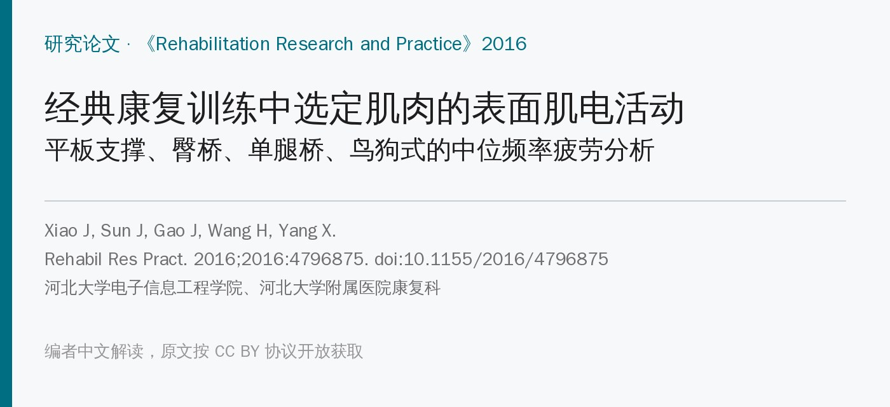
🔖原文信息（编者中文重排）
📚 文献信息
▪ Xiao J, Sun J, Gao J, Wang H, Yang X. The Activity of Surface Electromyographic Signal of Selected Muscles during Classic Rehabilitation Exercise. Rehabil Res Pract. 2016;2016:4796875. doi:10.1155/2016/4796875
▪ 中文题目：经典康复训练中选定肌肉的表面肌电活动
▪ 作者单位：河北大学电子信息工程学院；河北大学附属医院康复科
▪ 研究类型：横断面实验研究，30 名健康研究生，表面肌电中位频率分析
平板支撑、臀桥、单腿桥、鸟狗式，几乎是每个核心训练方案里都有的四个动作。以往的肌电研究大多看激活幅度（%MVIC，相当于“这块肌肉用了几成力”），比如往期推文介绍过的 Ekstrom 2007。
这篇换了一个角度：每个动作坚持 1 分钟，看肌电信号的中位频率随时间降得多快，用它来反映哪块肌肉先累。而且除了腹肌和竖脊肌，还把大腿和小腿肌肉也测了进来，这在以往研究里比较少见。
先交代一句：这篇的方法和数据问题不少（文末单独列出），结论要打折看。但“平板支撑时腿也在使劲”这类观察，对临床选动作有参考价值。
肌肉持续收缩、逐渐疲劳时，肌电信号的频谱会往低频移，中位频率（MF）就随时间下降。把 1 分钟内每秒的 MF 画出来，拟合一条直线，斜率越负，说明疲劳越快。
要注意，MF 斜率反映的是疲劳，不是激活程度。一块肌肉用力不大但持续时间长，也可能慢慢疲劳；原文在不少地方把“疲劳快”说成“更活跃”，读的时候要区分开。
• 受试者：30 名健康研究生，男女各 15 人，平均 24 岁，近一年腰、腹、腿无疼痛
• 测哪些肌肉：竖脊肌（ES）、腹外斜肌（EO）、腹直肌（RA）、股直肌（RF）、股二头肌（BF）、胫骨前肌（AT）、腓肠肌（G），左右两侧共 14 个通道
• 设备：Noraxon 16 通道无线表面肌电，采样 1500 Hz
• 动作：每个动作保持 1 分钟，中间休息 2 分钟，顺序随机
• 分析：计算每秒的中位频率并做线性拟合；只分析超过半数受试者出现疲劳的肌肉；左右两侧、不同肌肉之间用单因素方差分析比较
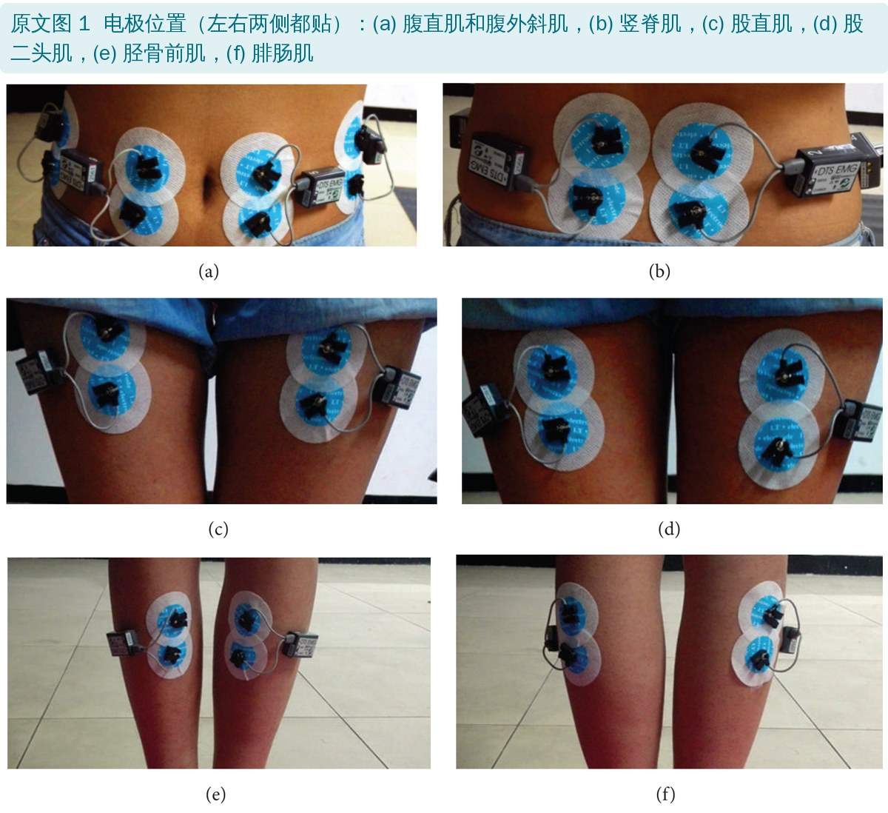
• 仰卧臀桥：屈膝 90°，脚尖朝前，双手放体侧，把腹部（骨盆）抬起
• 单腿臀桥：在仰卧臀桥基础上抬起一条腿；结果只分析了抬右腿的情况
• 平板支撑：肘和脚尖着地，身体与地面平行（原文叫 prone bridge，俯卧桥）
• 鸟狗式：四点跪位，脊柱保持中立，抬起对侧的手和腿；结果只分析了抬左臂和右腿
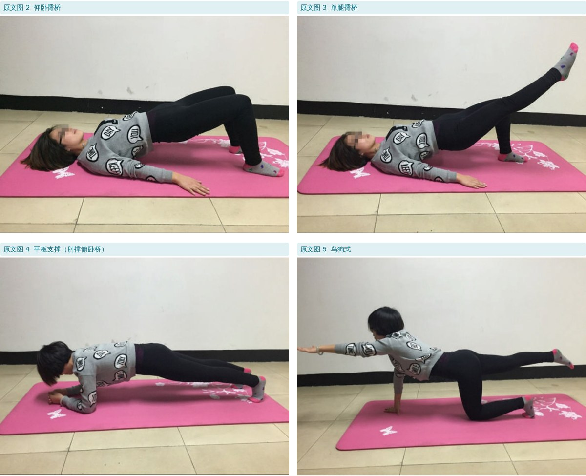
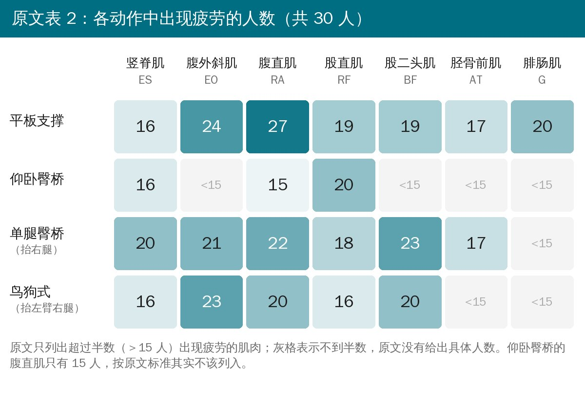
平板支撑七块肌肉全部过半数，其中腹直肌最多（27 人）；单腿臀桥六块过半数（腓肠肌没有）；鸟狗式五块（胫骨前肌、腓肠肌没有）；仰卧臀桥只有三块，而且都只是刚过半数。
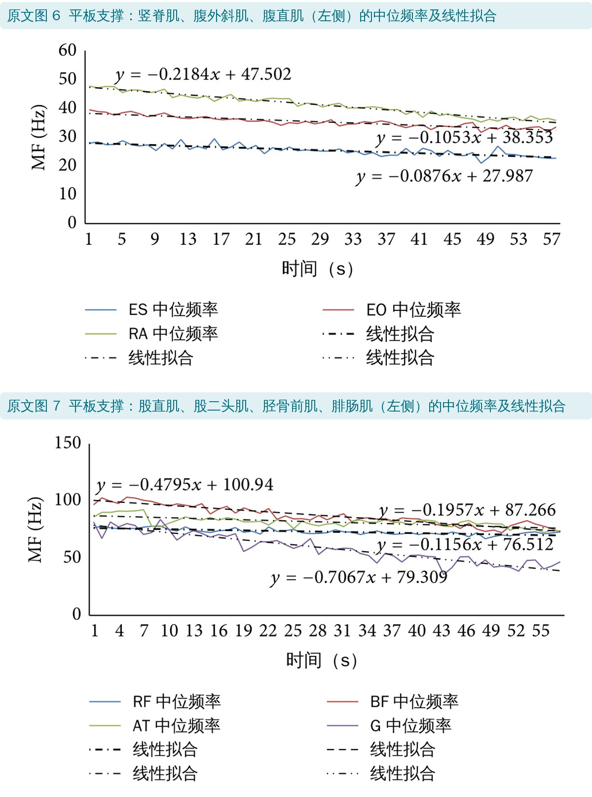
三块躯干肌里，腹直肌 MF 下降最快（−0.22 Hz/s），腹外斜肌其次，竖脊肌最平（−0.09）。下肢肌肉更明显：腓肠肌 −0.71、股二头肌 −0.48，都比腹直肌还陡；股直肌和胫骨前肌与躯干肌差不多。
作者据此认为平板支撑不只是练腹肌，对大腿后侧和小腿也有明显的负荷。这和临床上的观察一致：很多人平板支撑撑不住，不一定是核心先垮，可能是脚尖撑地的小腿先酸。
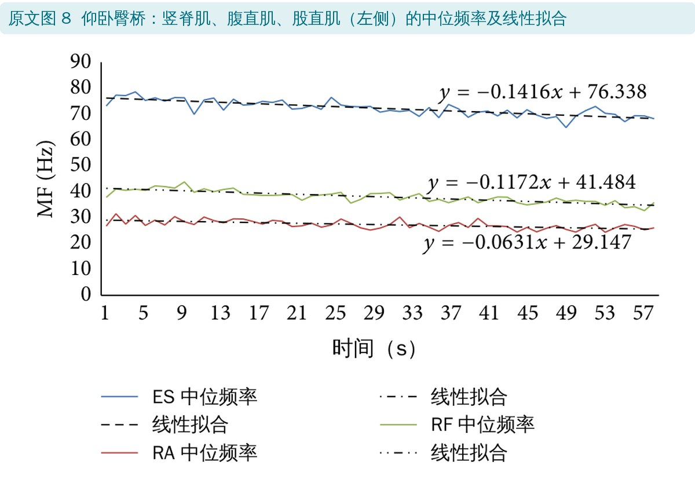
只有竖脊肌、腹直肌、股直肌达到半数左右，斜率都在 −0.15 Hz/s 以内，三块肌肉之间没有显著差异。这和以往 %MVIC 研究的结论一致：双腿仰卧桥是这几个动作里强度最低的（Czaprowski 2014 测腹肌时，仰卧桥的激活不到 5% MVC）。
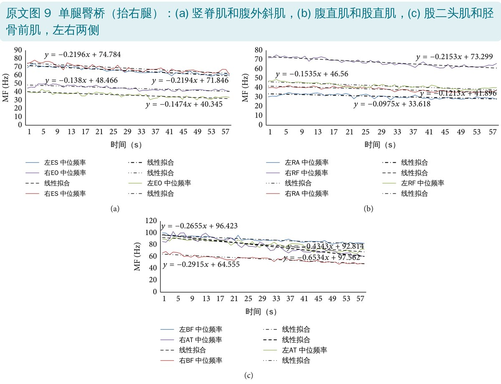
抬起一条腿后，过半数疲劳的肌肉从 3 块增加到 6 块，斜率也整体变陡。下降最快的是胫骨前肌：抬起侧（右）−0.65，支撑侧（左）−0.43；竖脊肌两侧都在 −0.22 左右；腹直肌最平。
左右两侧同名肌的斜率没有统计学差异，但抬起侧整体略陡。作者的解释是抬起侧要对抗那条腿的重量，才能维持骨盆不掉。
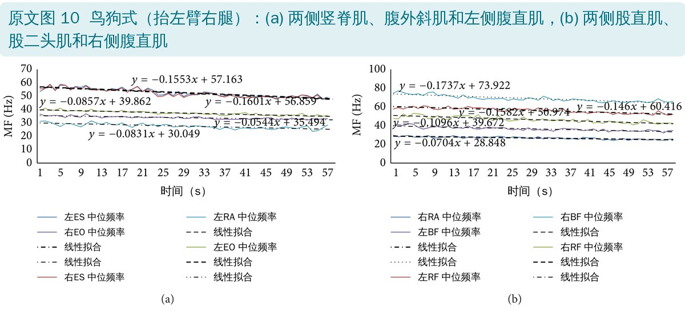
五块肌肉过半数疲劳，但斜率都不大（−0.05～−0.17 Hz/s），肌肉之间、左右之间都没有显著差异。抬起侧（右腿）的股二头肌下降最快，右侧腹外斜肌最平。作者把鸟狗式归为中等强度、适合练耐力的动作。
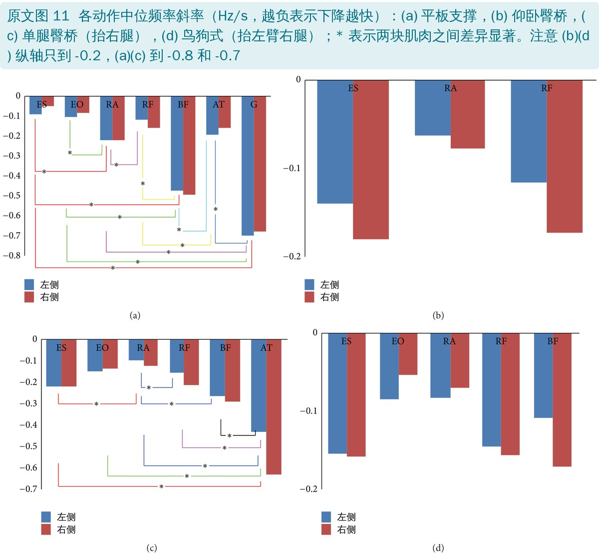
各动作左侧肌肉的中位频率斜率（Hz/s，编者从原文图 6～11 的拟合方程整理）
| 肌肉 | 平板支撑 | 仰卧臀桥 | 单腿桥（抬右） | 鸟狗式 |
|---|---|---|---|---|
| 竖脊肌 | −0.09 | −0.14 | −0.22 | −0.16 |
| 腹外斜肌 | −0.11 | — | −0.15 | −0.09 |
| 腹直肌 | −0.22 | −0.06 | −0.10 | −0.08 |
| 股直肌 | −0.12 | −0.12 | −0.15 | −0.15 |
| 股二头肌 | −0.48 | — | −0.27 | −0.11 |
| 胫骨前肌 | −0.20 | — | −0.43 | — |
| 腓肠肌 | −0.71 | — | — | — |
“—”表示该动作中出现疲劳的人不到半数，原文没有分析。原文没有在不同动作之间做统计比较，横向看只能作参考
"For healthy people, we should do prone bridge exercise to train abdominal and calf muscles, do unilateral bridge exercise for back muscles, and do bird-dog exercise to balance our whole body muscles."
"对健康人来说，可以用平板支撑练腹肌和小腿肌肉，用单腿桥练背部肌肉，用鸟狗式平衡地练全身肌肉。"
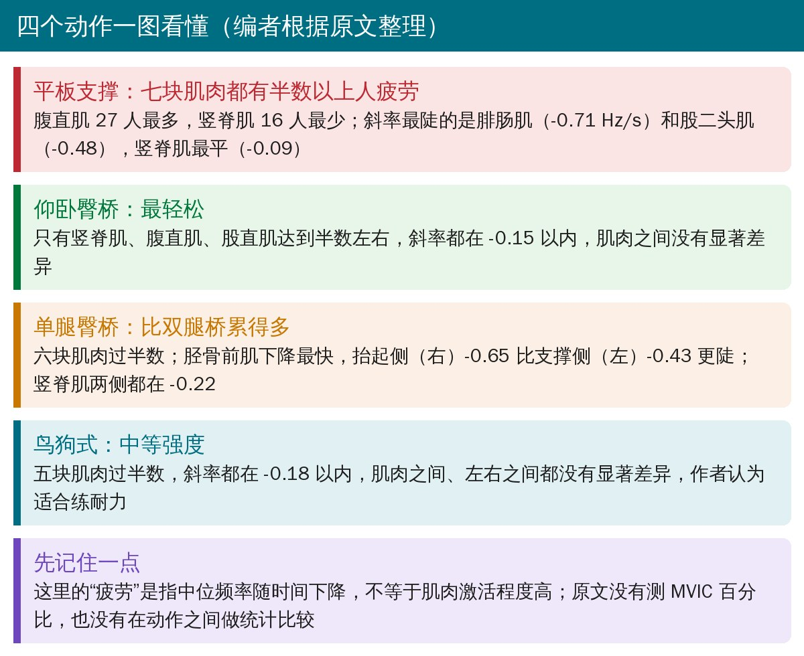
• 测的是疲劳，不是激活：没有做 MVIC 标准化，所以无法回答“这个动作练到某块肌肉几成力”。标题和结论里的“activity（活动）”其实都是疲劳速度
• 斜率没有按基线标准化：不同肌肉、不同动作的起始 MF 差别很大（28～101 Hz），直接比斜率大小会偏向起始频率高的肌肉。例如按起始值折算，平板支撑竖脊肌每秒下降约 0.31%，仰卧臀桥竖脊肌约 0.19%，结论与直接比斜率正好相反
• 信号处理描述有硬伤：带通滤波写的是 80～250 Hz，可图中的中位频率大量低于 80 Hz（详见文末）
• 统计方法偏弱：左右比较用单因素方差分析而不是配对检验；多块肌肉两两比较没提多重比较校正；“疲劳”的判定标准没有交代，而且只平均了被判为疲劳的受试者
• 人群局限：30 名年轻无痛研究生，每个动作只做一次 1 分钟，不能直接推到下腰痛患者
• 优点：把下肢肌肉纳入核心训练动作的肌电分析，四个动作的照片和电极位置清楚，可以作为“平板支撑也练腿”的一个参考
• 滤波范围和中位频率对不上：方法写 80～250 Hz 带通滤波，滤波后的信号中位频率应该落在 80 Hz 以上，但图 6～10 里竖脊肌、腹直肌等的 MF 只有 28～50 Hz；而且按原文描述的顺序，是先全波整流、RMS 平滑后再算中位频率，整流会改变频谱，通常应在原始信号上做频谱分析
• 胫骨前肌左右说反了：结果 3.1 写单腿桥“胫骨前肌最活跃，尤其是左侧”，但图 9(c) 和图 11(c) 显示右侧（抬起侧）−0.65 比左侧 −0.43 更陡，3.2 节也写的是右侧更累
• 鸟狗式前后矛盾：3.2 节说鸟狗式“引起最多的肌肉疲劳”，摘要和讨论却说鸟狗式“不会引起太多疲劳”、属于中等强度
• 表 2 写错动作：鸟狗式一行写成“抬左臂和右臂”，正文是抬左臂和右腿
• 入选标准没守住：只分析“超过 50%”受试者疲劳的肌肉，但仰卧臀桥的腹直肌是 15/30，正好 50%，仍被纳入
• 百分比和人数对不上：按 30 人算，腹直肌 27 人应为 90%（原文 91%），鸟狗式腹外斜肌 23 人应为 76.7%（原文 78%），仰卧桥股直肌 20 人应为 66.7%（原文 65%），竖脊肌 16 人同一个数在不同地方写成 52% 和 54%
• 把腹肌叫成“下背肌”：结果里把竖脊肌、腹外斜肌、腹直肌统称为“low back muscles”；摘要结论又说平板支撑“影响下背和下肢肌肉”，可平板支撑里竖脊肌恰恰是疲劳人数最少、斜率最平的
• 结论超出了数据：摘要说单腿桥比仰卧桥“激活更多”，讨论也做了不少动作间比较，但局限性里承认“没有比较同一块肌肉在不同动作中的水平”
• 同一块肌肉的基线差得离谱：竖脊肌起始 MF 在平板支撑是 28 Hz，仰卧桥是 76 Hz；单腿桥左股直肌 47 Hz、右股直肌 73 Hz。同一批人、同一电极，差这么多原文没有解释
• 引用撑不住论点：Czaprowski 2014 只测了腹肌，却被用来支持“竖脊肌疲劳高于腹外斜肌和腹直肌”；Ekstrom 2008 只测了胸最长肌和腰多裂肌，摘要也只是把桥式、侧桥、四点跪位抬肢统归为 <50% MVIC，却被引来说明“仰卧桥比平板支撑、鸟狗式激活更低”；Feldwieser 2012 只测躯干肌，被用来解释下肢左右差异（编者据 PubMed 摘要核对）
• 统计用语错误：“confidence interval is set to 0.05”，应为显著性水平 α = 0.05
• 时间对不上：每个动作做 1 分钟，图中横轴只到第 55～57 秒，没有说明截掉了哪一段
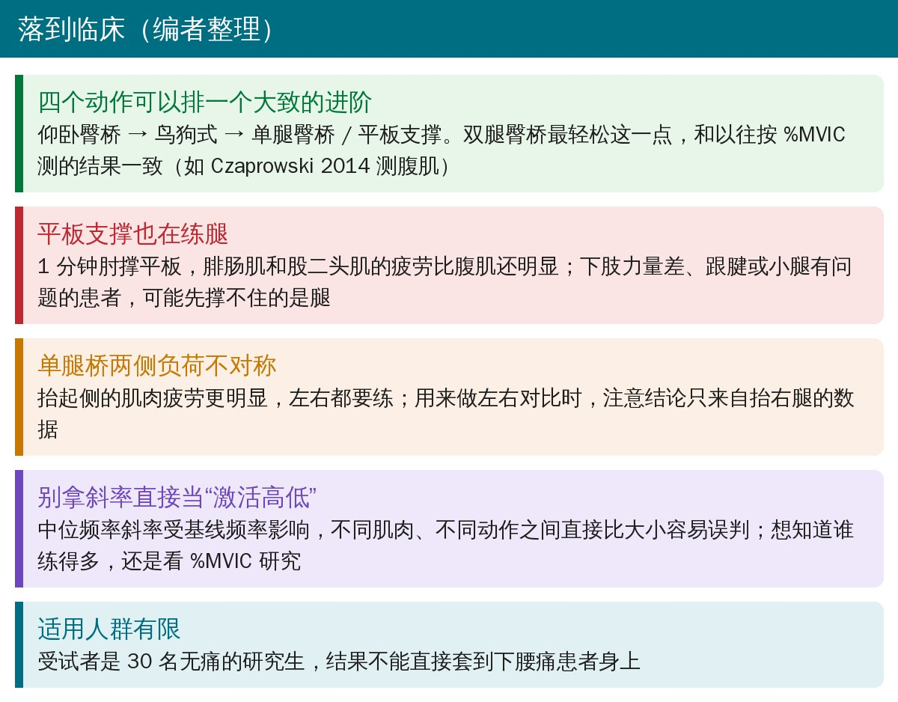
🔖临床要点（编者整理）
• 仰卧臀桥最轻松，适合放在核心训练的起点；加一条腿变成单腿桥，负荷明显上去
• 平板支撑也在练腿：腓肠肌、股二头肌累得比腹肌还快，小腿或跟腱有问题的人可以先改跪姿平板或缩短时间
• 鸟狗式强度适中，适合做耐力和控制训练
• 看肌电文章先分清指标：%MVIC 回答“用了几成力”，中位频率斜率回答“累得多快”，两者不能互相替代
欢迎关注骨科康复小黄公众号，获取更多物理治疗的专业知识！
📄参考文献：
Xiao J, Sun J, Gao J, Wang H, Yang X. The Activity of Surface Electromyographic Signal of Selected Muscles during Classic Rehabilitation Exercise. Rehabil Res Pract. 2016;2016:4796875. doi:10.1155/2016/4796875
编者核对引用时参考：Czaprowski D, et al. Phys Ther Sport. 2014;15(3):162-168. doi:10.1016/j.ptsp.2013.09.003；Ekstrom RA, et al. J Orthop Sports Phys Ther. 2008;38(12):736-745. doi:10.2519/jospt.2008.2865；Feldwieser FM, et al. Eur Spine J. 2012;21(Suppl 2):S171-S186. doi:10.1007/s00586-012-2254-7；Ekstrom RA, et al. J Orthop Sports Phys Ther. 2007;37(12):754-762. doi:10.2519/jospt.2007.2471（摘要信息来自 PubMed）
原文以知识共享署名协议（Creative Commons Attribution License，CC BY）开放获取。本文为中文解读：原文图 6～11 的图内英文已译成中文（数据和图形未改动），图 1～5 为原文照片，加了中文图注；表 2 热力图、斜率汇总表、首图、对比卡和临床要点卡为编者根据原文整理。仅供学习交流，如有侵权请联系删除。